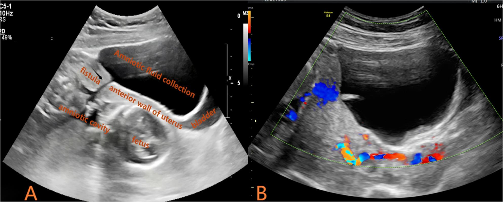
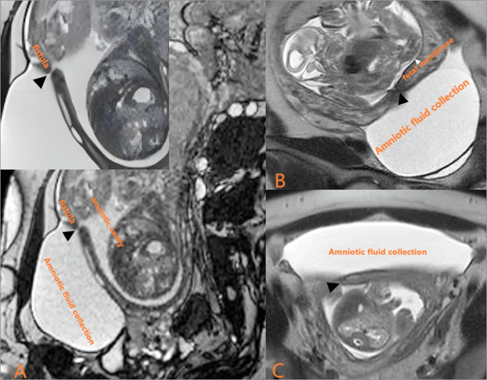

1635 — Vỡ ối non tháng sau can thiệp bào thai: lỗ trocar, ống rò thành tử cung & xử trí / Iatrogenic PPROM after fetal intervention
Tags: pattern:ro-oi-trocar pattern:vo-oi-non-thang pattern:thieu-oi pattern:tach-mang-oi vung:thai-nhi vung:manh-oi vung:tu-cung anatomy:buong-oi protocol:SA-thai protocol:MRI-thai protocol:PAMG-1
Mức chắc chắn (certainty): tổng hợp y văn (literature synthesis) — số liệu từ mô hình dự báo 414 thai sau laser (PMC12705759), ca nguyên văn có ống rò trocar–buồng ối (PMC13202899), phân tích gộp 10 nghiên cứu/1.159 thai về dự phòng sinh non sau laser (PMC12209700), đoàn hệ PPROM 22–28 tuần (PMC13188305), đoàn hệ thể tích ối (PMC13363472) và tổng quan chẩn đoán–xử trí PROM (PMC13134642).
1. Tổng quan bệnh học – cơ chế hình ảnh
1.1. Vì sao lỗ trocar 3–4 mm lại thủng màng ối vĩnh viễn
- Can thiệp bào thai (fetoscopy: laser TTTS, FETO, vá thoát vị rốn, đốt vasa previa) phải xuyên qua thành tử cung và cả hai lá màng bằng trocar 8–12 Fr (≈ 2,7–4 mm). Cơ tử cung lành lại, nhưng màng ối không có mạch máu nuôi — mô hoại tử ở mép lỗ không được thay thế, nên lỗ màng không liền (không có "sẹo màng ối").
- Hệ quả: một đường rò (fistula) từ buồng ối qua cơ tử cung ra ngoài. Trong ca nguyên văn PMC13202899, soi ổ bụng sau chấm dứt thai kỳ thấy sẹo cơ tử cung đã lành nhưng KHÔNG có màng ối phủ lên — đúng bằng chứng "cơ lành, màng không lành".
- Dịch ối thoát ra khoang trước bàng quang (vesicouterine pouch) rồi mới ra âm đạo, nên có thể không thấy rỉ ối mà chỉ thấy thiểu ối tiến triển — thể "PPROM kín" (occult).
- Tần suất: PPROM sau laser TTTS 11–50% (PMC12705759); 13,8% trong 7 ngày đầu sau laser (đoàn hệ TTTS sớm, PMC13040126); là biến chứng hay gặp nhất còn lại sau khi các biến chứng nặng khác đã giảm.
- Cơ chế tầng tiếp theo: tách màng ối–màng đệm (chorioamniotic separation, CAS) do trocar tạo khoang dịch giữa hai lá → màng ối mỏng, căng, dễ rách; CAS làm tăng nguy cơ PPROM OR 3,98 và sinh < 32 tuần OR 1,80 (bài 1610).
- Hậu quả theo thời gian: thiểu ối → giảm thể tích phổi (pulmonary hypoplasia) nếu kéo dài trước 22–24 tuần; dây rốn chèn ép; nhiễm trùng ối; sinh non; dải ối giả (PABS) do màng rách dính vào thai.
1.2. Vì sao phải định lượng chứ không "thấy ối ít"
- Thể tích ối đo bằng khoang dịch sâu nhất (deepest vertical pocket, DVP) cho từng buồng ối — AFI không dùng được ở song thai vì một túi lớn có thể bù cho túi kia.
- Trong đoàn hệ 263 thai PPROM < 34 tuần: 66,5% có DVP ≤ 20 mm lúc chẩn đoán; nhóm DVP ≤ 20 mm có biến cố thai 74,3% so với 52,3% (p < 0,05), nhưng thể tích ối KHÔNG dự báo thời gian giữ thai (Spearman ρ = 0,03; p = 0,598) (PMC13363472). Nghĩa là: ối ít = tiên lượng xấu cho thai, không phải "sẽ sinh trong vài ngày".
- Thời gian giữ thai (latency) sau PPROM 22–28 tuần: trung vị 6 ngày (IQR 2–23), không khác nhau theo tuổi thai lúc vỡ; sống tới xuất viện 67,0%, sống không di chứng nặng 42,9% (PMC13188305).
- Mô hình dự báo PPROM sau laser (414 thai, 151 ca PPROM): AUC 0,802 (KTC 95% 0,700–0,904) với 5 biến — rỉ ối sau mổ, thời gian mổ, tỉ lệ giảm dịch ối trong mổ làm tăng nguy cơ; chiều dài cổ tử cung trước mổ và khoảng cách trocar tới lỗ trong cổ tử cung làm giảm nguy cơ (PMC12705759).
2. Mẫu hình + chẩn đoán phân biệt theo vị trí (gamut)
2.1. Gamut "thiểu ối / có dịch bất thường quanh tử cung sau can thiệp"
- PPROM do lỗ trocar (có/không có ống rò): thiểu ối một hoặc hai buồng, khuyết màng ối ở thành tử cung trước đúng vị trí trocar, có thể kèm hốc dịch trước bàng quang; đè đầu dò hoặc đổi tư thế thấy dịch di chuyển.
- Ống rò thành tử cung–buồng ối (uterine puncture site–amniotic cavity fistula): khuyết cơ tử cung + đường hầm liên tục từ buồng ối ra khoang trước bàng quang, không có màng ối phủ; xác định bằng MRI (PMC13202899).
- Tách màng ối–màng đệm (CAS): hốc dịch giữa hai lá màng, màng ối còn nguyên, thai vẫn trong túi ối; không phải vỡ ối nhưng là tiền đề của PPROM (bài 1610).
- Dải ối giả (pseudoamniotic band sequence, PABS): sau PPROM, màng rách tạo dải dính vào chi/dây rốn; 1,3% sau laser, chỉ 27,3% phát hiện trước sinh (bài 1610).
- Thoát vị/sa túi ối qua khuyết cơ tử cung: túi ối lồi ra ngoài thanh mạc, hình "giọt" ngoài đường viền tử cung; khác ống rò ở chỗ có túi ối hoàn chỉnh chứ không phải đường hầm.
- Dịch trước bàng quang KHÔNG do ối: nước tiểu (vỡ bàng quang, rò niệu quản), máu tụ, dịch tiết sau mổ — đo creatinine dịch giúp phân biệt nước tiểu.
- PPROM tự phát không liên quan thủ thuật hoặc vỡ ối non tháng do nhiễm trùng; và đái rỉ/thai phụ khoa bình thường gây nhầm "rỉ ối".
2.2. Mẫu hình "đọc đúng trên siêu âm"
- Đúng PPROM: thiểu ối + khuyết màng ối ở thành tử cung + hốc dịch ngoài túi ối, kèm nghiệm pháp dịch âm đạo dương tính.
- Sai PPROM: màng ối liên tục, chỉ có hốc dịch giữa hai màng (CAS), hoặc thiểu ối một buồng do thai cho trong TTTS (bài 1611).
- Mẹo nhớ 4 nhóm: RÒ (lỗ trocar/ống rò) — TÁCH (CAS) — DẢI (PABS) — KHÁC (nước tiểu/máu/tự phát).

(A) Lát cắt dọc thành tử cung trước: mũi tên = đường rò (fistula) thông buồng ối với hốc dịch lớn trước bàng quang; (B) Doppler màu: không có dòng chảy trong khuyết — loại trừ mạch máu. Nguồn: Wang Y và cộng sự, BMC Pregnancy Childbirth 2026, PMC13202899, CC BY 4.0 — ảnh nguyên bản, không crop.3. Bảng so sánh phân biệt (ma trận đối chiếu)
| Thực thể (entity) | Hình ảnh điển hình (siêu âm/MRI) | Chốt vào (rule-in) | Chốt loại (rule-out) | Gợi ý xác nhận |
|---|---|---|---|---|
| PPROM do lỗ trocar | Thiểu ối + khuyết màng ối đúng vị trí trocar; dịch di chuyển khi đổi tư thế | Thấy khuyết màng ối + DVP giảm tiến triển + nghiệm pháp dịch âm đạo dương tính | Màng ối liên tục trên mọi lát cắt, DVP ổn định | Nghiệm pháp mỏ vịt (không thăm âm đạo bằng tay); PAMG-1/IGFBP-1 |
| Ống rò thành tử cung–buồng ối | Khuyết cơ tử cung + đường hầm liên tục ra khoang trước bàng quang; hốc dịch 10,4 × 6,6 × 11,0 cm trong ca nguyên văn | MRI BSSFP nghiêng dọc thấy đường rò + không có màng ối phủ (xác nhận sau sinh/mổ) | Có màng ối phủ kín khuyết; chỉ có dịch tự do không đường hầm | MRI thai không cản quang (BSSFP + T2) |
| CAS (tách màng ối–màng đệm) | Hốc dịch giữa hai lá màng, màng ối còn nguyên, thai trong túi ối | Hai lá màng tách nhau, thai vẫn bọc trong màng ối | Khuyết màng ối thật + rỉ ối ra ngoài | Siêu âm lặp 24–48 giờ; phân độ theo chiều rộng |
| PABS (dải ối giả) | Dải màng mảnh bắt chéo chi/dây rốn, có thể xoắn chi | Dải màng + tiền sử PPROM sau can thiệp | Dải ối bẩm sinh (amniotic band) khi không có tiền sử vỡ ối | Siêu âm chi tiết; MRI khi cần |
| Sa túi ối qua khuyết cơ | Túi ối lồi ra ngoài thanh mạc thành tử cung | Túi ối nguyên vẹn nằm ngoài đường viền tử cung | Đường hầm rò (không có túi ối) | MRI; theo dõi nguy cơ vỡ |
| Dịch trước bàng quang do nước tiểu/máu | Hốc dịch cùng vị trí nhưng không thông buồng ối | Creatinine dịch cao ≈ huyết tương (nước tiểu); Hounsfield/tín hiệu máu | Có đường rò từ buồng ối | Chọc hút dịch: creatinine, tế bào, cấy |
| Thiểu ối do TTTS (thai cho) | Một buồng ối ≤ 2 cm + buồng kia ≥ 8 cm, bàng quang thai cho không thấy | Cặp ngưỡng ối của TTTS, không có rỉ ối | Màng ối nguyên, không khuyết | Đo DVP hai buồng + MCA-PSV (bài 1611) |
3.1. Ba câu hỏi chốt trong 30 giây
- Có khuyết màng ối thật không? Có → PPROM; chỉ có hốc dịch giữa hai màng → CAS.
- Dịch ở đâu? Trong túi ối → bình thường; giữa hai màng → CAS; trước bàng quang + đường hầm → ống rò.
- Có bằng chứng ối trong âm đạo không? PAMG-1/IGFBP-1 dương → xác nhận vỡ ối; âm mà vẫn thiểu ối tiến triển → nghi PPROM kín/ống rò, chuyển MRI.
4. Protocol chụp + xử trí theo ngưỡng
4.1. Siêu âm (bắt buộc mỗi lần khám sau can thiệp)
- Đầu dò bụng + đầu dò âm đạo (nhẹ tay, không thăm khám bằng tay vì làm tăng nhiễm trùng và rút ngắn latency).
- Đo DVP từng buồng ối, chiều dài cổ tử cung, bàng quang thai, Doppler rốn/não giữa; khảo sát thành tử cung trước theo lát cắt dọc đúng đường trocar (thường thành trước).
- Doppler màu tại khuyết: không có dòng giúp loại trừ mạch máu/túi phình giả thành tử cung.
- Khi nghi ống rò: đo kích thước hốc dịch, so sánh 2 lần cách 24–72 giờ (tiến triển nhanh = rò hoạt động).
4.2. MRI thai (khi siêu âm không kết luận)
- Không cản quang: BSSFP (FIESTA/TrueFISP) lát nghiêng dọc + T2W; mục tiêu là đường hầm liên tục từ buồng ối qua cơ tử cung (PMC13202899).
- Chỉ định: thiểu ối tiến triển mà không thấy rỉ ối, hốc dịch trước bàng quang không rõ nguồn, cần phân biệt túi ối sa/ống rò trước khi quyết định can thiệp.
- Trong ca nguyên văn, MRI 20 tuần xác nhận rò + hốc dịch + bất thường não thai (giãn não thất phải; thai nhận có teo nhu mô khu trú) → đổi hoàn toàn tư vấn.
4.3. Xác nhận vỡ ối bằng xét nghiệm
| Test | Độ nhạy / độ đặc hiệu | Ghi chú |
|---|---|---|
| PAMG-1 (AmniSure) | 96,7% / 98,3% | Tốt nhất trong so sánh trực tiếp; PPV 98,3%, NPV 96,7% |
| IGFBP-1 (Actim PROM) | 95,4% / 92,9% | PPV 92,3%, NPV 95,8% |
| Nitrazine / ferning | Thấp hơn, phụ thuộc người đọc | Dùng khi không có test miễn dịch; âm tính không loại trừ |
(Số liệu so sánh trực tiếp trong PMC13134642.)
4.4. Xử trí theo ngưỡng (PPROM sau can thiệp)
- Kháng sinh: erythromycin 250 mg × 4/ngày, tối đa 10 ngày (NICE) hoặc ampicillin 2 g mỗi 6 giờ + erythromycin 250 mg mỗi 6 giờ (ACOG) — giảm viêm ối, nhiễm sơ sinh, kéo dài latency; tránh co-amoxiclav đơn thuần (liên quan viêm ruột hoại tử).
- Corticosteroid: 24+0 – 33+6 tuần khi có nguy cơ sinh trong 7 ngày; nhắc lại 1 lần nếu > 7 ngày và còn < 34 tuần.
- Magnesium sulfate trước 32 tuần để bảo vệ não thai.
- Không bán khâu/vòng nang thường quy sau laser: phân tích gộp 10 nghiên cứu/1.159 thai không thấy tăng tuổi thai hay giảm sinh non (GRADE thấp) (PMC12209700).
- Vá màng/amniopatch – truyền dịch ối: chưa có bằng chứng từ RCT; tổng quan 14 nghiên cứu cho thấy tăng thể tích ối + không viêm ối là dấu hiệu kết cục tốt, nhưng vá không hoàn toàn vẫn có lợi (PMC10377155). Truyền dịch ối ngắt quãng không hiệu quả (dịch thoát ngay); truyền liên tục qua port đang được thử trong RCT (PMC9500795).
- Thời điểm sinh: cá thể hóa; ≥ 34 tuần thường cân nhắc sinh vì nguy cơ nhiễm tăng dần; < 32 tuần ưu tiên giữ thai nếu không có viêm ối/nhiễm trùng/thai suy.
- Tiên lượng để tư vấn: latency trung vị 6 ngày (2–23), sống 67,0%, sống không di chứng nặng 42,9% (PMC13188305) — dùng cho cả nhóm tự phát lẫn iatrogenic, không hứa "giữ được lâu".
flowchart TD
A[Thieu oi hoac nghi ri oi sau can thiep] --> B{Khaos sat thanh tu cung truoc<br/>co khuyet mang oi}
B -->|Khong, chi hoc dich giua hai mang| C[CAS - theo doi 24 den 48 gio<br/>khong goi PPROM]
B -->|Co khuyet| D[Do DVP tung buong<br/>Doppler mau tai khuyet<br/>Chieu dai co tu cung]
D --> E{Nghiem phap mo vit<br/>PAMG-1 hoac IGFBP-1}
E -->|Duong tinh| F[PPROM da xac nhan]
E -->|Am tinh nhung thieu oi tien trien| G[MRI BSSFP nghieng doc<br/>tim ong ro thanh tu cung]
G --> H{Co duong ham<br/>ra khoang truoc bang quang}
H -->|Co| F
H -->|Khong| C
F --> I[Khang sinh erythromycin<br/>Corticosteroid 24 den 33 tuan 6 ngay<br/>MgSO4 truoc 32 tuan]
I --> J{Co viem oi, nhiem trung<br/>thai suy, hoac tuoi thai lon hon 34 tuan}
J -->|Co| K[Can nhac sinh]
J -->|Khong| L[Tiep tuc giu thai<br/>sieu am 1 den 2 lan moi tuan<br/>DVP co tu cung MCA]
L --> J
5. Biến thể bình thường và cạm bẫy
- CAS không phải PPROM: hốc dịch giữa hai lá màng với màng ối nguyên vẹn; gọi nhầm là "vỡ ối" dẫn tới sinh non iatrogenic. Ngược lại, CAS là yếu tố nguy cơ PPROM (OR 3,98) nên phải theo dõi sát, không được bỏ.
- "PPROM kín" do ống rò: dịch chảy vào khoang trước bàng quang nên không rỉ ra âm đạo, test PAMG-1 âm tính giả; chỉ có thiểu ối tiến triển. Ca PMC13202899 mất 20 ngày từ laser đến chẩn đoán.
- Thiểu ối một buồng sau laser không đồng nghĩa vỡ ối: ở TTTS, buồng của thai cho vốn ≤ 2 cm; so sánh với DVP trước laser và tìm khuyết màng ối.
- Thăm khám bằng tay làm hại: thăm âm đạo bằng tay tăng viêm ối, nhiễm sơ sinh và rút ngắn latency — chỉ dùng mỏ vịt vô khuẩn.
- Đo AFI ở song thai: AFI gộp hai túi che mất thiểu ối một bên; luôn đo DVP từng buồng.
- Dịch trước bàng quang có thể là nước tiểu: sau trocar/đặt catheter, nước tiểu và máu tụ cho hình ảnh giống hệt; creatinine dịch và Doppler giúp phân biệt.
- "Ối tăng lại" không loại trừ rò: thai vẫn tiết nước tiểu; DVP có thể dao động trong vài ngày — đánh giá xu hướng chứ không một lần đo.
- PABS là biến chứng muộn sau PPROM: thai có dải màng + tiền sử rỉ ối phải khảo sát chi và dây rốn kỹ.
6. Tự lượng giá — Blind Quiz
Ca 1 — thiểu ối 20 ngày sau laser
- Gợi ý lâm sàng: song thai một bánh nhau, laser SOLOMON 17 tuần 1 ngày; 19 tuần 6 ngày siêu âm thấy "túi ối lồi ra thành bụng", một buồng ối ít.
- Câu hỏi: (1) Mũi tên trỏ vào đâu, hốc dịch là gì? (2) Doppler màu nói gì? (3) Chẩn đoán và vì sao không thấy rỉ ối?
Bấm để hiện đáp án (findings + chẩn đoán)
- Dấu hiệu: (A) khuyết dạng khe ở thành tử cung trước đúng vị trí trocar (mũi tên = fistula) thông buồng ối với hốc dịch lớn trong khoang trước bàng quang; bàng quang bị đè; (B) không có dòng chảy trong khuyết → không phải mạch máu.
- Chẩn đoán: PPROM sau can thiệp + ống rò vị trí trocar–buồng ối, thể "kín" (dịch vào khoang trước bàng quang trước khi ra âm đạo).
- Vì sao: màng ối không có mạch máu → lỗ trocar không liền; cơ tử cung lành nhưng không có màng phủ (xác nhận bằng soi ổ bụng sau chấm dứt thai kỳ).
- Nguồn ảnh: Wang Y và cộng sự, BMC Pregnancy Childbirth 2026, PMC13202899, CC BY 4.0.
Ca 2 — "đường hầm" trên MRI

- Gợi ý lâm sàng: siêu âm không phân biệt được sa túi ối hay rò; thai 20 tuần, thiểu ối tăng dần.
- Câu hỏi: (1) Mô tả đường hầm và hốc dịch. (2) Vì sao MRI thay đổi tư vấn? (3) Có cần gadolinium không?
Bấm để hiện đáp án (findings + chẩn đoán)
- Dấu hiệu: (A) BSSFP nghiêng dọc — đường rò (mũi tên đen) xuyên thành tử cung trước, hốc dịch ối trong khoang trước bàng quang đè bàng quang; (B, C) mặt phẳng ngang/khác — màng ối (fetal membrane) và hốc dịch; buồng ối thật giảm thể tích.
- Vì sao quan trọng: MRI xác nhận rò thật (không chỉ sa túi ối) và phát hiện bất thường não hai thai (giãn não thất phải; teo nhu mô khu trú ở thai nhận) → tiên lượng xấu, thai phụ chọn chấm dứt thai kỳ.
- Gadolinium: không cần — BSSFP/T2 đủ thấy đường hầm dịch; tránh thuốc cản quang ở thai khi không cần thiết.
- Nguồn ảnh: Wang Y và cộng sự, BMC Pregnancy Childbirth 2026, PMC13202899, CC BY 4.0.
Ca 3 — quyết định giữ thai
- Gợi ý lâm sàng: laser TTTS 20 tuần; 22 tuần DVP 1,2 cm/3,1 cm, màng ối có khuyết nhỏ thành trước, không sốt, không đau tử cung, CRP bình thường, cổ tử cung 28 mm.
- Câu hỏi: (1) Chẩn đoán? (2) Bốn việc phải làm ngay? (3) Tư vấn thời gian giữ thai dựa trên số nào?
Bấm để hiện đáp án (findings + chẩn đoán)
- Chẩn đoán: PPROM sau can thiệp, chưa có dấu hiệu nhiễm ối; DVP 1,2 cm = thiểu ối mức trung bình.
- Bốn việc: (1) không thăm âm đạo bằng tay, khám mỏ vịt + PAMG-1/IGFBP-1; (2) erythromycin 250 mg × 4/ngày (hoặc ampicillin + erythromycin); (3) corticosteroid (22 tuần) + MgSO4 bảo vệ não; (4) siêu âm 1–2 lần/tuần (DVP, cổ tử cung, Doppler) + theo dõi nhiễm (sốt, CRP, dịch ối).
- Tư vấn: latency trung vị 6 ngày (IQR 2–23) sau PPROM 22–28 tuần; sống tới xuất viện 67,0%, sống không di chứng nặng 42,9% (PMC13188305). Thể tích ối không dự báo latency (ρ = 0,03) — đừng hứa "còn nhiều ối thì còn lâu".
- Nguồn số liệu: PMC13188305, PMC13363472, PMC13134642, PMC12209700.
Bài liên quan chéo
- 1610 – Tách màng ối sau can thiệp bào thai: phân độ, PPROM & dải ối giả
- 1611 – TTTS tái phát sau laser: chẩn đoán lại, phân giai đoạn Delphi 2025 & laser lần 2
- 587 – Dự phòng sinh non sau laser TTTS
- 566 – Song thai: xác định màng đệm–màng ối & TTTS/TAPS
- 1645 – Theo dõi sau đốt laser vasa previa
Ảnh
images/1635_ipprom_US_PMC13202899-F1.jpg— siêu âm khuyết thành tử cung + hốc dịch trước bàng quang (PMC13202899, CC BY 4.0).images/1635_ipprom_MRI_PMC13202899-F2.jpg— MRI BSSFP/T2 đường rò trocar–buồng ối (PMC13202899, CC BY 4.0).- Nguồn và giấy phép chi tiết:
images/CREDITS.md; nguồn học thuật:sources.md.
Không dùng để chẩn đoán độc lập khi chưa có người hướng dẫn.